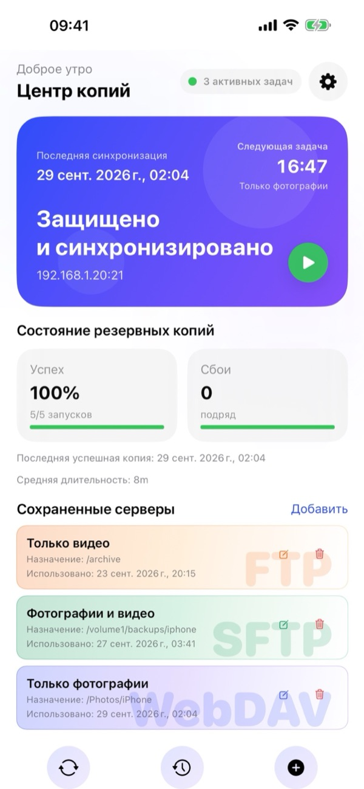
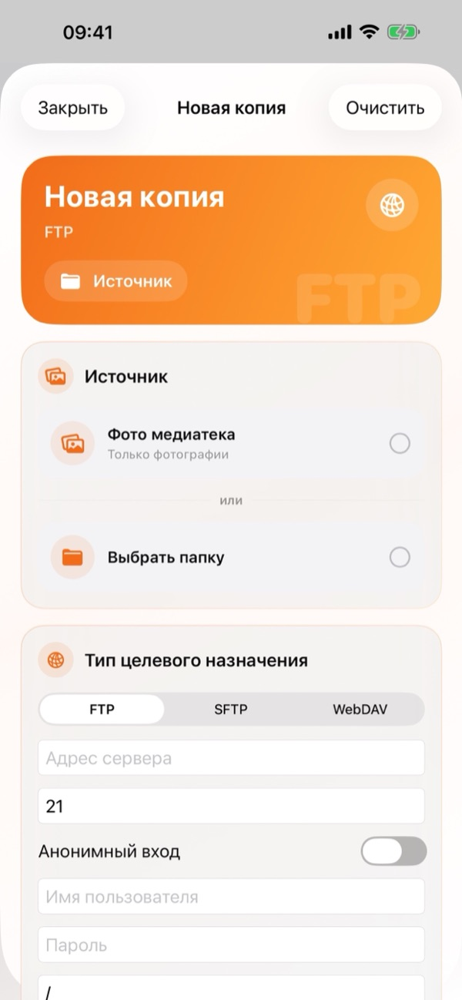
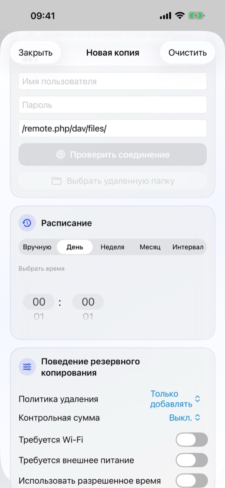
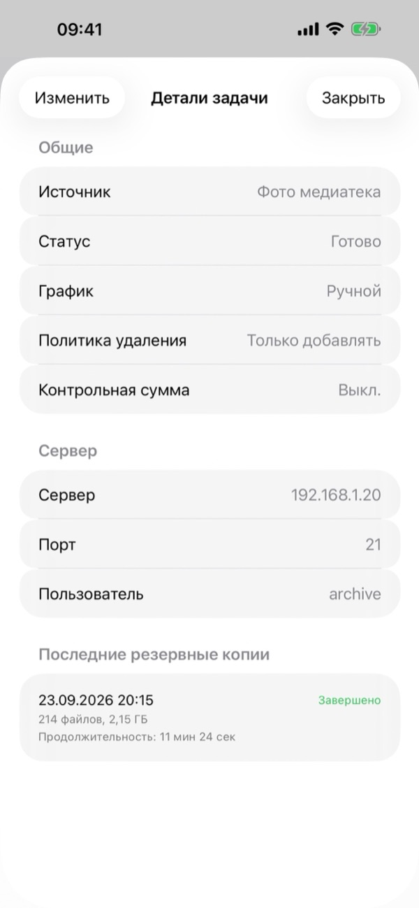
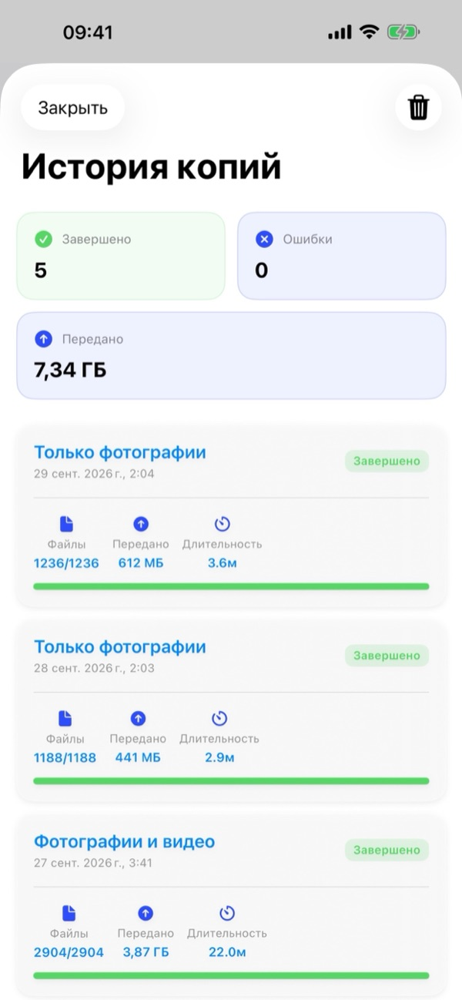
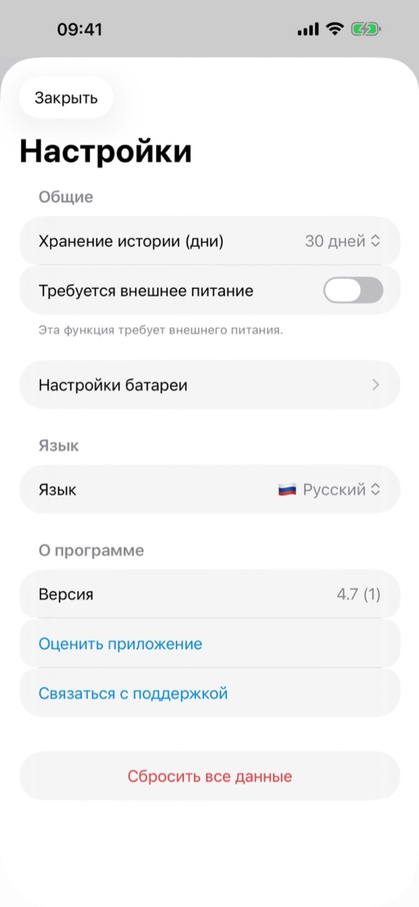

1. Что понадобится
- Совместимый сервер: Любой NAS (Synology, QNAP, TrueNAS, Unraid), домашний сервер или личное облако (Nextcloud, ownCloud, WebDAV) с поддержкой FTP, SFTP (SSH) или WebDAV (HTTP/HTTPS).
- Данные для входа: Адрес сервера, порт (FTP 21, SFTP 22, WebDAV 443/80), Имя пользователя и Пароль (или анонимный вход для FTP).
- Разрешения iOS: Полный доступ к Фото, доступ к Локальной сети (для домашнего сервера) и Уведомления.
2. Обзор Центра копий
Главный экран Центр копий показывает состояние ваших резервных копий в реальном времени:
- Карточка статуса: Показывает время последней синхронизации, следующую задачу, статус защиты, адрес сервера и зелёную кнопку Запуск (▶) для немедленного старта копирования.
- Здоровье копий: Отображает процент успешных запусков, количество ошибок подряд, дату последней успешной копии и среднюю длительность.
- Сохраненные серверы: Карточки ваших задач FTP, SFTP и WebDAV с быстрыми кнопками Изменить (✏️) и Удалить (🗑️). Нажмите на карточку, чтобы открыть Детали задачи.
- Нижняя панель и Настройки: Три кнопки внизу позволяют Синхронизировать (🔄), открыть Историю копий (🕒) или создать Новую копию (+). Значок шестерёнки (⚙️) в правом верхнем углу открывает Настройки.

3. Создание новой резервной копии
Нажмите кнопку + внизу Центра копий (или Добавить рядом с Сохраненные серверы), чтобы открыть экран Новая копия:
- Источник: Выберите Фото медиатека (только фото, только видео или всё вместе) или нажмите Выбрать папку, чтобы указать любую папку из приложения «Файлы».
- Тип цели: Выберите FTP, SFTP или WebDAV. Введите адрес сервера, порт, Имя пользователя, Пароль и удалённый путь (например,
/remote.php/dav/files/). Нажмите Проверить соединение, а затем при необходимости Выбрать удаленную папку. - Расписание: Выберите Вручную, День, Неделя, Месяц или Интервал и укажите время в поле Выбрать время.
- Поведение резервного копирования: Настройте Политику удаления, Контрольную сумму и условия запуска, затем сохраните задачу.
После первой полной копии передаются только новые или изменённые файлы, поэтому последующие копии выполняются намного быстрее.


4. Детали задачи и управление
Нажмите на любую задачу в разделе Сохраненные серверы, чтобы открыть Детали задачи:
- Общие: Просмотр источника, текущего статуса, расписания, Политики удаления и параметра Контрольная сумма.
- Сервер: Просмотр адреса сервера, порта и имени пользователя.
- Последние копии: Список последних запусков этой задачи с датой, статусом, числом файлов, объёмом и длительностью.
- Нажмите Изменить в левом верхнем углу для редактирования задачи.

5. Расписание и условия запуска
В разделе Расписание доступны режимы: Вручную, День, Неделя, Месяц и Интервал с выбором точного времени (Выбрать время).
В разделе Поведение резервного копирования можно задать условия для автоматического запуска:
- Требуется Wi-Fi: Исключает использование мобильного интернета.
- Требуется внешнее питание: Копирование выполняется только во время зарядки iPhone.
- Использовать разрешенное время: Ограничивает работу выбранным временным окном (например, только ночью).
- Минимальный уровень батареи (в Настройки › Настройки батареи): Откладывает копирование при низком заряде.
6. Политика удаления, Контрольная сумма и iCloud
В разделе Поведение резервного копирования настраивается обработка удалённых файлов и проверка целостности:
- Политика удаления › Только добавлять
- С сервера никогда ничего не удаляется. Рекомендуется, если после резервного копирования вы планируете удалять фото с iPhone для освобождения памяти.
- Политика удаления › Зеркало
- Папка на сервере остаётся точной копией источника. Файлы, удалённые на iPhone, удаляются и с сервера.
- Политика удаления › Архивное удаление
- Удалённые на iPhone файлы не стираются, а перемещаются в папку .backupflow_archive с датой на сервере.
- Контрольная сумма
- Проверяет целостность каждого загруженного файла на сервере (по умолчанию Выкл. для максимальной скорости).
Совет для Фото iCloud: Включите Загружать элементы iCloud при необходимости, чтобы копировать оригиналы фото и видео, которые хранятся только в iCloud.
7. Копирование в фоновом режиме
BackupFlow использует системный планировщик iOS BGTaskScheduler. Поскольку iOS сама выбирает точное время фонового запуска в зависимости от заряда и использования устройства, задача может запуститься чуть позже выбранной минуты или прислать уведомление.
Если iOS приостановит передачу, просто откройте BackupFlow — копирование продолжится с того же места, а уже загруженные файлы будут пропущены. Для первой большой копии держите iPhone на Wi-Fi и зарядке.
8. История копий
Нажмите среднюю кнопку История (🕒) на нижней панели Центра копий:
- Сводные карточки: Показывают общее количество успешных и неудачных запусков, а также общий объём переданных данных (ГБ/МБ).
- Подробный журнал: В каждой записи указаны название задачи, дата, статус, количество файлов, размер и длительность. Значок корзины (🗑️) в правом верхнем углу очищает историю.

9. Настройки приложения
Нажмите на значок шестерёнки (⚙️) в правом верхнем углу Центра копий, чтобы открыть Настройки:
- Хранение истории (дни): Срок хранения записей журнала (например, 30 дней).
- Требуется внешнее питание и Настройки батареи: Глобальные правила питания и минимального заряда.
- Язык: Мгновенное переключение языка интерфейса среди 12 поддерживаемых языков.
- О приложении: Номер Версии, кнопки Оценить приложение и Связаться с поддержкой.
- Сбросить все данные: Удаляет все задачи, историю и сохранённые пароли с этого iPhone. Файлы на ваших серверах остаются нетронутыми.

10. Решение проблем
- Не удаётся подключиться к серверу.
- Проверьте адрес, порт (FTP 21, SFTP 22, WebDAV 443/80), логин и пароль. Для домашнего сервера убедитесь, что iPhone подключён к той же сети Wi-Fi и доступ разрешён в Настройки iPhone › Конфиденциальность и безопасность › Локальная сеть › BackupFlow.
- Запланированная копия не запустилась.
- Проверьте условия в разделе Поведение резервного копирования (Wi-Fi, питание, временное окно, батарея) и разрешения на уведомления.
- Не хватает некоторых фотографий.
- Разрешите полный доступ к Фото и включите Загружать элементы iCloud при необходимости.
- Файлы пропали с сервера.
- Измените Политику удаления задачи с Зеркало на Только добавлять или Архивное удаление.
- Предупреждение безопасности SFTP.
- Изменился SSH-отпечаток сервера. Это нормально после переустановки сервера; иначе обратитесь к администратору сервера.
11. Конфиденциальность и безопасность
Ваши файлы передаются напрямую с iPhone на ваш собственный сервер. У BackupFlow нет собственных серверов, приложение никогда не видит ваши файлы и не собирает никаких данных. Пароли надёжно зашифрованы в Связке ключей iOS (Keychain). Подробности читайте в нашей Политике конфиденциальности.
12. Нужна помощь?
Откройте Настройки › Связаться с поддержкой в приложении (или напишите на tamersavasci@icloud.com). Версия приложения и модель устройства добавляются в письмо автоматически.